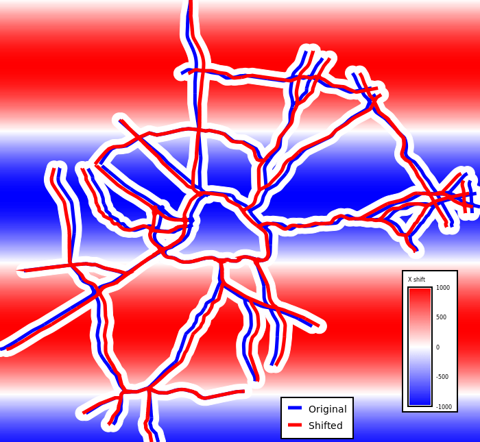

DESCRIPTION
v.rast.move takes values from raster maps and adds them to X and Y
coordinates of features in a vector map vertex by vertex. Works on lines
only, other features are ignored and not included in the result.
Null values in rasters are turned into zeros by default and a warning is
generated. This behavior can be modified by the nulls option to
either silence the warning with explicit nulls="zeros"
or the warning can be turned into an error with nulls="error".
The rasters are loaded based on the computational region, so the most
advantageous use of resources is to set the computational region to
match the vector. To avoid issues with vector coordinates at the border
of the computational region, it is best to also grow the region one cell
on each side. Vector features outside of the computational region always
result in an error being reported (regardless of the nulls option),
but the rasters can have any extent as along as the computational region
is set to match the vector.
NOTES
Unlike v.perturb which moves points randomly, v.rast.move
works on vertices of lines and uses same value for all vertices at a given
cell. Unlike v.transform used with raster values in attribute columns,
v.rast.move operates on individual vertices in the line, not on the
whole line (attributes are associated with features, not their vertices).
EXAMPLES
Shift in X direction
This example uses the North Carolina sample dataset.
Set the computational region to match the vector map and use
100-meter resolution.
g.region vector=roadsmajor res=100
g.region vector=roadsmajor res=100
r.mapcalc expression="a = 1000 * sin(row())"
r.mapcalc expression="b = 0"
v.rast.move input=roadsmajor output=roads_moved x_raster=a y_raster=b

Figure: Original (blue) and shifted (red) road network and the X shift
values in diverging blue-white-red colors (red shift right, blue shift
left, white no shift)
SEE ALSO
-
v.transform
for changing coordinates for the whole vector map or
feature by feature based on the attributes,
-
v.perturb
for randomly changing point positions by small amounts,
-
r.mapcalc
for generating or adjusting the raster maps,
-
g.region
to set the computational region before the computation.
AUTHOR
Vaclav Petras, NCSU Center for Geospatial Analytics, GeoForAll Lab
{kind=link}